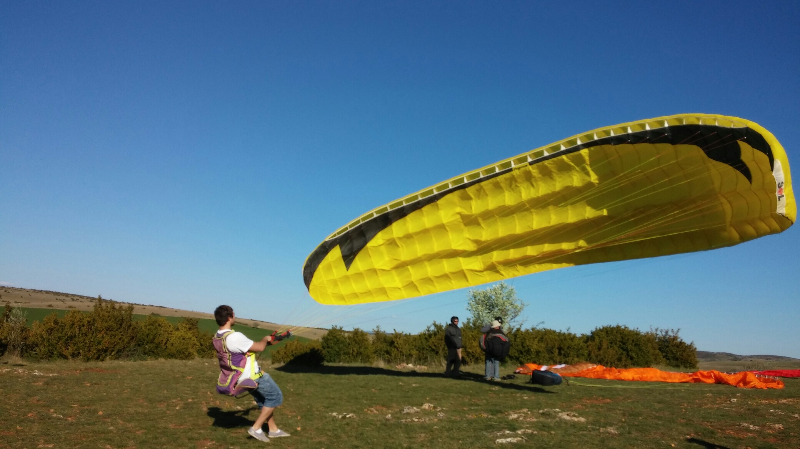

Sites principaux
Blog - Général
Je poste ici de tout et de rien. L'objectif premier est de faire partager mes opinions personnelles, raconter des expériences vécues et regrouper des infos que je trouve pertinentes. En particulier dans le domaine de l'infromatique.
Un partageur de liens et de notes est aussi présent pour diffuser facilement du contenu que je ne détaille pas autant que dans le blog.
Portfolio
Vous trouverez ici la liste de toute mes réalisations dans le domaine de l’informatique, mon CV et quelques informations générales.
Vous pourrez ainsi vous faire déjà une idée de mes compétences et voir les travaux que j'ai accompli.
Blog - Parapente
Blog séparé du premier, qui est plus généraliste, car celui-ci concerne plus particulièrement des sujets sur la pratique du parapente.
Il y a également un partageur de liens et de notes, comme dans le blog principal, pour partager du contenu extérieur.
Mes autres sites
Démos
Regroupement de projets en test sur un vrai serveur et quelques réalisations.
S.I.P.P.E.C
Site d'Informations Pour Pilotes Et Curieux. Wiki colaboratif concernant l'aviaton en général.
Instances personnelles
Me contacter
Si vous voulez me contacter, vous pouvez le faire directement à l'adresse suivante :
contact <at> romain-monin.fr
